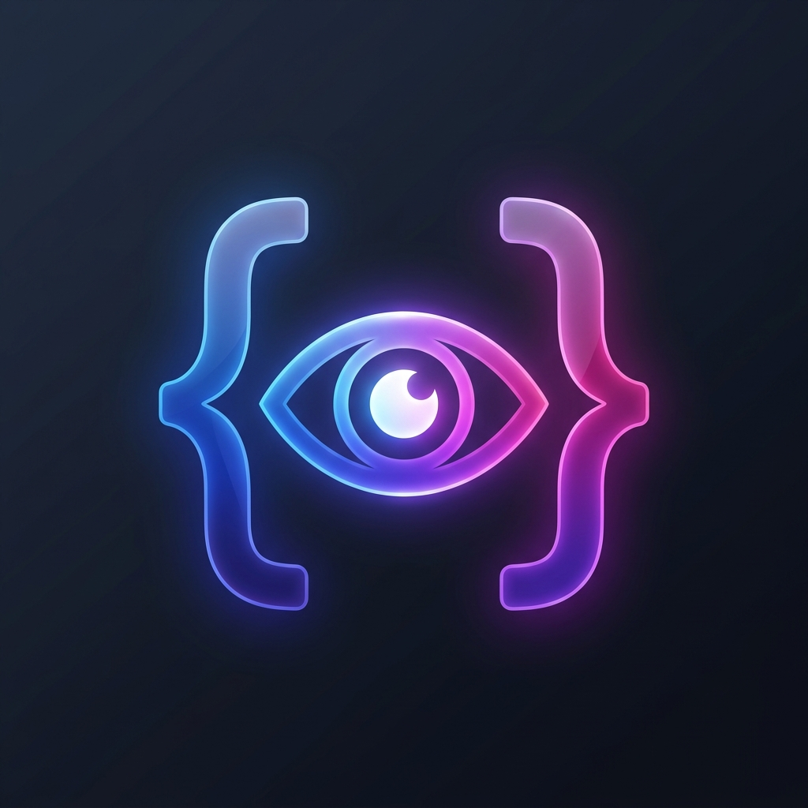
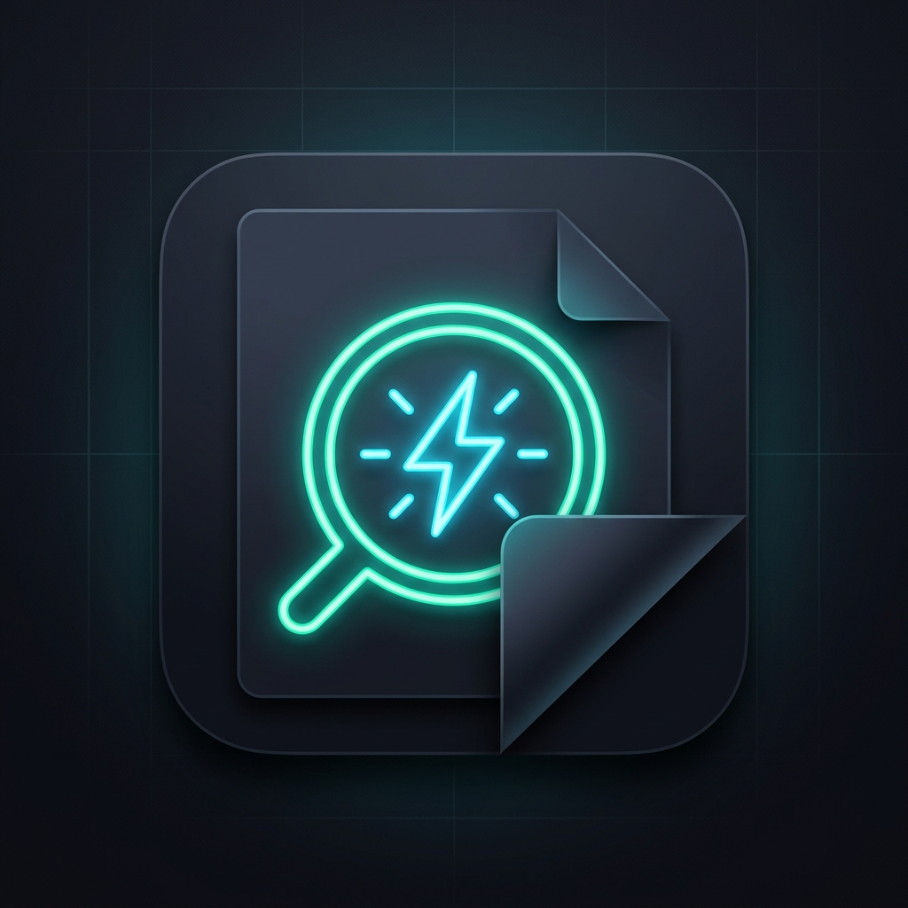

针对 Preview All-in-One with QuickLook 插件图标的美观度与辨识度优化，我们设计了以下三款不同风格与寓意的全新图标备选。请点击调试或直接在下方预览设计并反馈您的选择。

将经典的 VS Code 大括号（或代码块）几何轮廓与一只科技感、流光的“预览之眼”相结合。渐变风格采用蓝、紫、品红的高对比流光色彩，具有玻璃拟态透明感。

采用极其干净的圆角暗色纸片层叠效果，中间嵌入一道亮眼的霓虹青（Teal）和电光蓝（Cyan）的折页与放大星芒，暗示文档一击即开、光速预览的能力。
使用镜头/放大镜聚焦文档的传统图标重绘。色彩完美呼应 VS Code 原生的经典蓝色和橙色（对比色）渐变。具有精致的磨砂细节与边缘高光，极具软件专业感。
| 对比维度 | 方案一：流光极简 | 方案二：极简极光 | 方案三：经典汇聚 |
|---|---|---|---|
| 辨识度 (Icons Recognition) | ★★★★★ 流光色泽极其夺目，在市场中脱颖而出。 |
★★★★☆ 青色极光科技感十足，但在低分辨率下线条较细。 |
★★★★★ 传统放大镜加文档，人人都能一眼看懂其代表预览。 |
| 与 VS Code 契合度 | ★★★★☆ 代码括号暗示开发工具，色彩现代。 |
★★★★☆ 与流行的黑客/极客极简主题色完美融合。 |
★★★★★ 完全采用 VS Code 官方的双色渐变体系。 |
| 精致感 (Detail & Finish) | ★★★★★ 平滑渐变、磨砂边缘，极具高级感。 |
★★★★★ 层叠阴影表现极佳，深邃迷人。 |
★★★★☆ 扁平化材质，专业度拉满。 |